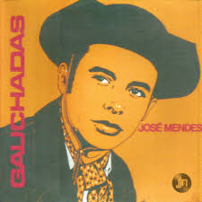

Abandonei a querência, contrariei meu coração
Por andar muito cansado da vida que leva um peão
Trabalhava noite e dia, me pagavam quase nada
Arriscava a minha vida laçando boi na invernada
Cá na cidade vivo de recordação
Quase morro de saudade das coisas do meu rincão
Cá na cidade vivo de recordação
Quase morro de saudade das coisas do meu rincão
Peguei meu cavalo zaino, companheiro de jornada
Presenteei para uma prenda que era minha namorada
Fiz a gaúcha chorar, quando eu lhe disse assim
Cuide bem do meu cavalo e nunca te esqueças de mim
Tem certas coisas que machucam o coração
Lembro o meu cavalo zaino e das coisas do meu rincão
Tem certas coisas que machucam o coração
Lembro o meu cavalo zaino e das coisas do meu rincão
Diz que até os passarinhos não se escuta mais cantar
Depois que eu vim me embora, voaram pra outro lugar
Lembro das brigas de touros, do brazino e do zebu
Das noites de Lua cheia e das caçadas de tatu
O meu cachorro latindo lá no capão
Lembro a minha prenda linda e das coisas do meu rincão
O meu cachorro latindo lá no capão
Lembro a minha prenda linda e das coisas do meu rincão
Coitado de um pobre peão, estranha barbaridade
Saindo lá da campanha pra morar cá na cidade
É uma vida diferente, não tem nem comparação
Quando lembra as suas coisas machuca seu coração
Ando sofrendo, pois tenho muita razão
Estava muito acostumado com as coisas do meu rincão
Ando sofrendo, pois tenho muita razão
Estava muito acostumado com as coisas do meu rincão
